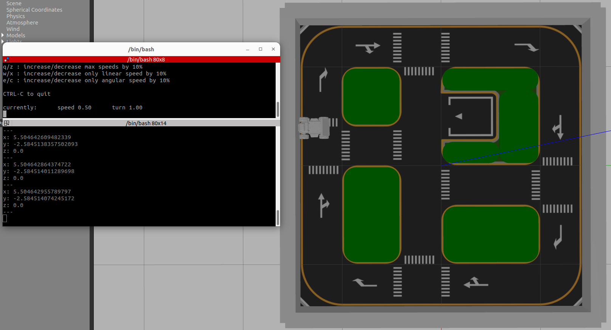
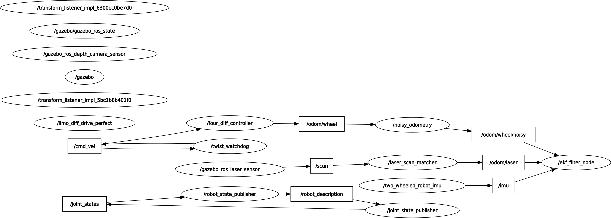
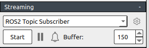
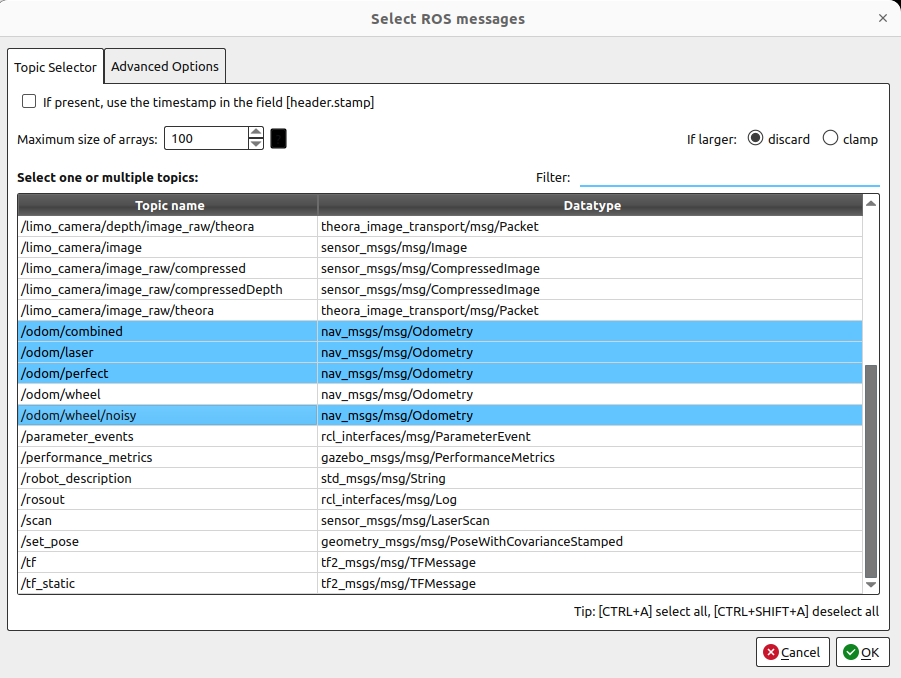
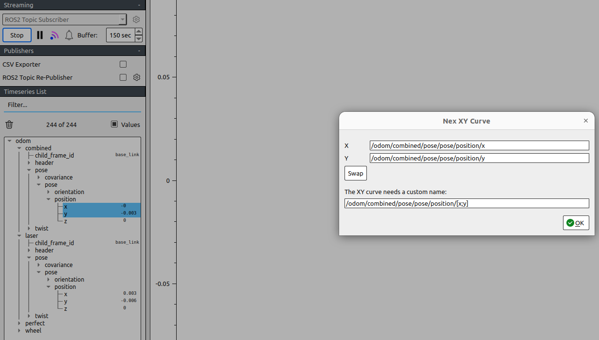
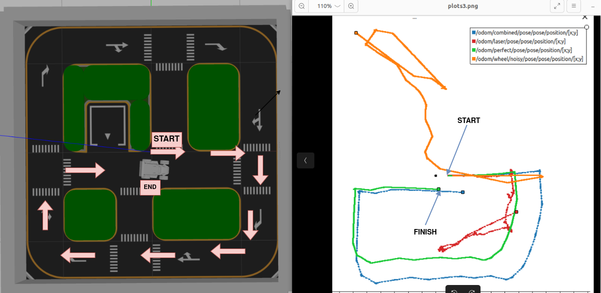
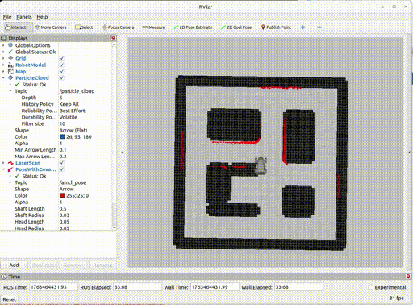
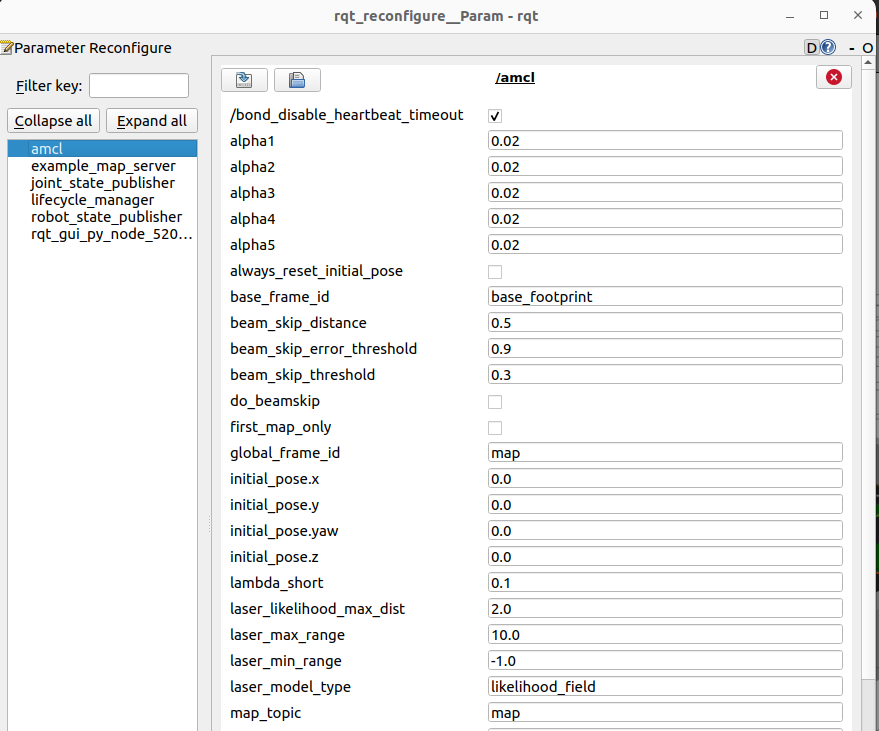
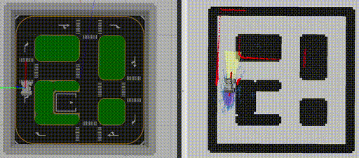

Lecture 9: Odometry, Sensor Fusion (EKF) & AMCL Localization
9.1Why wheel odometry alone isn't enough
A note on length: this session runs longer than the others because it deliberately absorbs what used to be two separate 3-hour sessions — sensor fusion and AMCL localization are really two halves of the same "where am I?" problem, and walking through them back-to-back is what makes the connection between them click. That's intentional, not scope creep — but it's also completely fine to split this into two lab meetings. Section 9.8 (end of the fusion half) is a natural break point before the localization half begins in Section 9.9.
Since Lecture 5 you've trusted the odom → base_link transform to tell RViz (and every
downstream node) where LIMO is. That transform is built entirely from wheel odometry:
encoder ticks converted to distance travelled, integrated over time into an (x, y, θ) pose. It's cheap,
fast, and updates at a high rate. It is also, on its own, not a source of ground truth — and
understanding exactly why is the foundation for everything else in this lecture.
Recall the encoder math from Lecture 9's hardware theory (now folded into Lecture 11's real-hardware lab): distance per tick = 2πR / N, where R is the wheel radius and N is the number of ticks per revolution. That formula already hints at the problem — it assumes the wheel's actual rolling contact with the ground perfectly matches its commanded rotation. In the real world it never quite does:
| Drift source | What happens |
|---|---|
| Wheel slip | The wheel spins (or skids) without the corresponding amount of true ground travel — common on smooth tile, loose gravel, or during sharp turns. |
| Encoder quantization | Ticks are discrete. A tick count of N per revolution means the smallest distance LIMO can "notice" is 2πR/N — anything smaller is silently rounded away, tick after tick. |
| Uneven terrain | Small bumps, floor transitions, or cable ramps change the effective rolling radius moment to moment, which the encoder math never accounts for. |
| Accumulated numerical error | Odometry is dead reckoning — each new pose is the old pose plus a small increment. Every increment carries a little error, and integration means those errors never cancel out; they accumulate. |
Wheel odometry is locally smooth but not globally trustworthy forever. Over one second it is excellent — practically noise-free. Over ten minutes of driving, the accumulated error can be large enough that the "you are here" marker in RViz is meters away from reality, even though the short-term motion still looks perfectly continuous. Error grows roughly with distance and time travelled, not with a fixed ceiling.


"My odometry looked perfect in the 30-second demo, so it must be fine." Drift is a function of distance and time, not a bug that shows up immediately. Always evaluate odometry quality over a run long enough to actually see it, not just the first few seconds.
9.2Making the problem realistic: noisy_odometry.py
Here's an inconvenient truth about learning sensor fusion in simulation: Gazebo's default wheel odometry plugin is often too clean. Running an EKF against a near-perfect signal "fuses" it with an almost-as-good signal — a pipeline that runs without errors but never visibly earns its keep, because there was barely any drift to correct in the first place.
This course's example_codes package includes noisy_odometry.py specifically
to fix that pedagogical gap. It subscribes to a clean simulated odometry topic, injects calibrated
Gaussian noise into the position and orientation fields, and republishes the result — deliberately
degrading a perfect signal into something that behaves like a real robot's wheel odometry: small
per-step errors that compound into visible long-run drift.
You cannot appreciate what a filter is correcting if there's nothing meaningfully wrong to correct.
Injecting realistic Gaussian noise gives you an odometry source that behaves like a real LIMO on a
real floor, so that when you later see /odometry/filtered tracking closer to ground
truth than /odom/noisy did, the improvement is real and visible, not a rounding artifact.
From here on, treat /odom/noisy as "the wheel odometry LIMO would actually give you" —
it's the input the rest of this lecture's fusion pipeline is built to handle.
9.3A second independent estimate: laser scan matching
If wheel odometry's weakness is that it never looks outside the robot's own wheels, the fix is to add a source of motion estimation that doesn't touch the wheels at all. LIMO's 2D LiDAR gives us exactly that, via laser scan matching: comparing two consecutive LiDAR scans and estimating how much the robot must have moved and rotated to explain the difference between them.
Scan matching is conceptually similar to ICP (Iterative Closest Point): take the point cloud from scan t, take the point cloud from scan t+1, and search for the rigid transform (translation + rotation) that best aligns one onto the other. Whatever transform best explains the shift in the surrounding walls and obstacles is the estimated motion — no wheels, no encoders, no ticks involved.
This course uses the ros2_laser_scan_matcher package to run this in real time:
Because this estimate comes from the environment's geometry rather than the drivetrain, it fails in a completely different way than wheel odometry does — which is exactly why it's valuable as a second, independent source.
| Source | Fails when... |
|---|---|
| Wheel odometry | Wheels slip, terrain is uneven, or floor friction is inconsistent — the drivetrain doesn't reflect true motion. |
| Laser scan matching | The environment lacks geometric structure — a long straight corridor with featureless walls, or an open field with nothing in LiDAR range gives the matcher nothing to lock onto, so its alignment (and therefore its motion estimate) becomes unreliable. |
Scan matching that performs beautifully in a cluttered lab room can degrade sharply the moment LIMO enters a long, empty, feature-poor hallway — there simply isn't enough distinguishing shape in consecutive scans to align confidently. This is a real, expected failure mode, not a bug in the matcher.
9.4IMU as a third, complementary source
LIMO's onboard IMU adds a third perspective, and it is good at precisely the things wheel and laser
odometry are weakest at: very short-term, high-frequency motion. The IMU publishes at a high update
rate and its angular_velocity field is an excellent, low-latency measure of how fast the
robot is rotating right now — far more immediate than inferring rotation from wheel speed differences
or from comparing two whole LiDAR scans.
It is tempting to think "the IMU measures acceleration, so I can integrate acceleration twice and
get position." In practice this fails fast. linear_acceleration carries small bias and
noise, and double-integrating it into velocity and then position lets that bias compound
continuously — position estimates from raw IMU integration alone can drift wildly within seconds,
not minutes. The IMU is a complementary signal, never a standalone position source.
| Source | Best at | Weak at |
|---|---|---|
| Wheel odometry | Steady, continuous short-term position/velocity | Long-run drift from slip and terrain |
| Laser scan matching | Environment-referenced motion, immune to wheel slip | Featureless/open environments |
| IMU | High-rate, low-latency rotation and short-term dynamics | Integrating linear acceleration into position over any real duration |
None of these three is trustworthy alone across the full range of conditions LIMO will encounter. That is exactly the setup sensor fusion exists to solve.
9.5The Extended Kalman Filter, conceptually
An Extended Kalman Filter (EKF) is a recursive algorithm that maintains a running
best estimate of the robot's state — typically x, y, θ (and
often their velocities) — and continuously improves that estimate as new measurements arrive. It runs
in a tight two-step loop, forever, at whatever rate you configure it to run at.
x, y, θ (+ uncertainty)"] --> P["PREDICT
propagate with motion model
uncertainty grows"] P --> U["UPDATE
correct with new measurement
(wheel odom / laser odom / IMU)
uncertainty shrinks"] U --> S U --> O["/odometry/filtered"] style P fill:#eef0ff,stroke:#3d4bf5,color:#211f1a,font-weight:bold style U fill:#eafaf3,stroke:#0e9e6e,color:#211f1a,font-weight:bold style O fill:#fdf3e4,stroke:#c8862c,color:#211f1a
- Predict: using the motion model, the filter propagates the current state estimate forward in time — "given the last known state and velocity, where should the robot be now?" Because no new measurement has been consulted yet, uncertainty (covariance) grows during this step.
- Update: when a measurement arrives from one of the fused sources (wheel odom, laser odom, or IMU), the filter compares the prediction to that measurement and pulls the estimate toward it — weighted by how much that source is trusted (its covariance). Uncertainty shrinks during this step.
A plain, linear Kalman Filter assumes the motion model is a straightforward linear equation. A mobile
robot's motion model is not linear — updating heading involves sin(θ) and
cos(θ) terms, since moving "forward" points in a different world-frame direction
depending on current heading. The EKF handles this by linearizing the nonlinear
model around the current state estimate at every single predict step, then applying standard
Kalman-Filter math to that local linear approximation. That's the "Extended" in Extended Kalman
Filter.
Think of predict/update as "guess, then get corrected, then guess again." Between measurements, the filter's confidence erodes a little (predict). The instant a new measurement lands, confidence snaps back up in proportion to how much that source is trusted (update). A source you've told the filter to distrust barely nudges the estimate; a source you've told it to trust heavily can pull the estimate substantially. This weighting is exactly what the covariance settings in the next section control.
An EKF fuses estimates using a motion model that predicts where the robot should be before any sensor reading arrives. What actually happens to the fused estimate if that motion model itself is wrong — say, it assumes LIMO always drives in perfect straight lines and arcs, but a real wheel is slipping? Does the filter fail loudly, or something worse?
9.6robot_localization in practice
robot_localization is the standard, battle-tested ROS 2 implementation of the EKF loop
just described. It's not part of a default ROS 2 install, so the first step is building it from source
alongside your workspace:
What the EKF actually fuses, and how much it trusts each input, is entirely defined in a config file —
this course's version is ekf_limo.yaml. Each odometry/IMU source gets its own entry, and
the key idea is a fusion mask: a set of booleans, one per state variable, saying which
fields that particular source is allowed to contribute to the fused estimate.
# ekf_limo.yaml (excerpt)
ekf_filter_node:
ros__parameters:
use_sim_time: true
frequency: 30.0
two_d_mode: true
publish_tf: true
map_frame: map
odom_frame: odom
base_link_frame: base_link
world_frame: odom
odom0: /odom/noisy
odom0_config: [true, true, false,
false, false, true,
false, false, false,
false, false, false,
false, false, false]
odom1: /odom/laser
odom1_config: [true, true, false,
false, false, true,
false, false, false,
false, false, false,
false, false, false]
imu0: /imu/data
imu0_config: [false, false, false,
false, false, false,
false, false, false,
false, false, true,
false, false, false]
imu0_remove_gravitational_acceleration: true
Every _config array has fifteen entries, in fixed order:
x, y, z, roll, pitch, yaw, vx, vy, vz, vroll, vpitch, vyaw, ax, ay, az.
true means "this source is allowed to contribute to this state field." In the excerpt
above, wheel odometry (odom0) and laser-matched odometry (odom1) both
contribute x, y, and yaw — but the IMU (imu0)
contributes only vyaw (fine-grained yaw rate), not position and not even the
absolute yaw angle. That's a deliberate design choice: the IMU is the best source in this fleet for
instantaneous rotational rate, so that's the one field it's trusted with, while position stays the
job of the two odometry sources.
Even a perfectly stationary IMU still measures Earth's gravity along its vertical axis. Leaving this
flag off makes the filter believe the robot is constantly accelerating — a classic cause of a
parked LIMO slowly "drifting" in RViz for no apparent reason. Set it true whenever you
fuse raw IMU acceleration.
The fused output is published on a single, standard topic:

ekf_filter_node subscribing to /odom/noisy, /odom/laser, and /imu/data, publishing /odometry/filtered and the odom → base_link transform.9.7Seeing it work: comparing four trajectories
Configuration on paper is not proof. The real payoff of this lecture is watching all four estimates of LIMO's motion — raw wheel odometry, the noisy version, laser-matched odometry, and the EKF-fused output — plotted on top of each other while LIMO drives a real path.
Drive a clean, repeatable test loop. A GUI is often easier than keyboard teleop for this:
While driving, launch PlotJuggler to subscribe to all four odometry topics simultaneously:


/odom, /odom/noisy, /odom/laser, and /odometry/filtered together.
Drag each source's pose.pose.position.x against position.y into an XY plot
to overlay all four trajectories on the same axes:


/odometry/filtered over time: it dips each time a trusted measurement arrives, then creeps back up during predict-only intervals.
On a loop that returns LIMO to its starting point, raw /odom/noisy typically ends
several centimeters to tens of centimeters off from the true start. /odom/laser, in a
feature-rich room, tracks much closer to the true path but may wobble in open stretches.
/odometry/filtered should end up closest of all to the true starting point — visible,
measurable proof that the fusion is doing real work, not just relabeling one of the inputs.
9.8Exercises: tuning the fusion
Run noisy_odometry.py and ros2 topic echo /odom/noisy side by side with the clean /odom topic. Drive LIMO in a straight line for 5 seconds and compare the reported x position between the two — note how small the difference is at first.
Edit ekf_limo.yaml to also let imu0 contribute absolute yaw (not just vyaw) at the same time odom0 already does. Relaunch the EKF, drive a loop, and see whether /odometry/filtered's heading becomes noticeably jumpier — this demonstrates the "two authorities, one field" mistake from Section 9.17's common mistakes.
Drive LIMO down a long, feature-poor corridor (or a stretch of simulated open field) with ros2_laser_scan_matcher running. Overlay /odom/laser against /odometry/filtered in PlotJuggler and identify the point where the laser-matched trajectory starts to diverge from the fused (and true) path. Then explain, in your own words, why the EKF's fusion mask protects the overall estimate even when one input source is failing.
9.9From relative motion to a place on the map
Everything so far in this lecture tells the robot how far it has moved relative to where it started. None of it tells the robot where it actually is inside a building. If you carried LIMO across the room while it was powered off, its odometry would swear it never moved — fused or not.
The rest of this session assumes you already have a map — a picture of the room the robot operates in, built ahead of time. Given that map and a live laser scan, how does the robot figure out which point on the map it is currently standing at, and which way it is facing? That is the localization problem, and the tool that solves it in Nav2 is AMCL — Adaptive Monte Carlo Localization.
You might expect a course to teach map-building (SLAM) before map-using (localization). We deliberately flip that order. Localizing on a map that already exists is a strictly easier problem than SLAM: SLAM has to solve "where am I?" and "what does the world look like?" simultaneously, each one feeding uncertainty into the other. AMCL only has to solve the first question, because the map is a known, fixed, trusted quantity. Learning to reason about pose estimation in isolation — with the hardest variable held constant — builds the intuition you'll need to understand why SLAM (Lecture 10) is harder.
For the labs in this section we'll assume a map called limo_room.yaml /
limo_room.pgm already exists — either one supplied with the course materials, or one
you'll build in Lecture 10 and reuse here afterward. The pipeline itself does not care how the map
was made.
| Question | Answered by |
|---|---|
| What does the room look like? | map_server, reading a saved .pgm/.yaml pair |
| Where is the robot on that map, right now? | amcl, fusing /scan against the map |
| How was the map built in the first place? | SLAM — Lecture 10 |
AMCL continuously publishes the transform from the map frame to the odom
frame. Combined with the EKF's already-continuous odom → base_link transform from
earlier in this lecture, this completes the full TF chain map → odom → base_link —
the exact chain Nav2's planner and costmaps depend on in Lecture 10.
9.10Map format deep-dive: .pgm + .yaml
A ROS 2 map is stored as two files that must sit side by side and share a base name:
limo_room.pgm— a grayscale image (Portable Gray Map format) that IS the occupancy grid. Each pixel is one grid cell.limo_room.yaml— metadata that tellsmap_serverhow to interpret the image.
Occupancy grid pixel semantics
| Pixel shade | Meaning |
|---|---|
| White | Free space — the robot may travel here |
| Black | Occupied — a wall or obstacle was observed here |
| Gray | Unknown — never observed; no claim is made either way |
Here is a representative limo_room.yaml:
image: limo_room.pgm
resolution: 0.05
origin: [-5.20, -4.80, 0.0]
negate: 0
occupied_thresh: 0.65
free_thresh: 0.25| Field | Meaning |
|---|---|
image | Filename of the paired .pgm, relative to the .yaml |
resolution | Meters per pixel — 0.05 means each pixel covers a 5 cm × 5 cm patch of floor |
origin | [x, y, theta] — the map-frame pose of the image's bottom-left pixel |
negate | If 1, inverts the black/white meaning (rare — most maps leave this at 0) |
occupied_thresh | Pixels darker than this (as a 0-1 occupancy probability) are classified occupied |
free_thresh | Pixels lighter than this are classified free; anything between the two thresholds is unknown |
A single cutoff would force every pixel to be labeled free or occupied, wiping out the "unknown"
category. Real maps always have unmapped territory — the far side of a door that was never opened
during mapping, say. The gap between free_thresh and occupied_thresh is
exactly that gray zone, and AMCL treats unknown cells differently from confirmed free space when
scoring particles against the map.

limo_room map loaded via map_server and viewed in RViz2 — white corridors, black walls, gray unmapped fringe.
If you hand-edit a .yaml file and get resolution wrong relative to the
actual .pgm pixel grid, every distance on the map is silently scaled. The map will
load without any error — RViz will just show a room that is the wrong physical size, and
AMCL's particle weighting against real laser ranges will never converge cleanly. Always leave
resolution exactly as SLAM wrote it unless you know precisely why you're changing it.
9.11The particle filter, conceptually
AMCL stands for Adaptive Monte Carlo Localization. "Monte Carlo" is a hint that this algorithm works by random sampling rather than by solving an equation directly. Instead of computing one single "best guess" pose, AMCL maintains a whole population of guesses — a cloud of particles, where each particle is a complete hypothesis: "the robot might be at this exact (x, y, θ)."
Imagine 300 people scattered around a floor plan of the building, each one guessing "I bet the robot is standing right here, facing this way." Each guesser hears the robot's wheels turn (odometry) and shuffles their guess accordingly — but nobody's ears are perfect, so they each shuffle a slightly different amount. Then everyone looks at what the robot's laser scanner actually reported and asks themselves: "if I were really standing where I guessed, would my walls line up with what the laser just saw?" People whose guess matches the scan well shout loudly; people whose guess makes no sense against the walls go quiet. Now we ask the quiet guessers to sit down and let the loud guessers spawn new guessers near themselves. Repeat this hundreds of times per second, and the crowd — initially scattered everywhere — clumps tighter and tighter around the true position.
That crowd behavior is exactly AMCL's three-step cycle, run every time a new laser scan arrives:
move every particle by
the odometry motion,
plus injected noise"] --> B["2. WEIGHT
score each particle:
does /scan match what THIS
pose would expect to see?"] B --> C["3. RESAMPLE
keep high-weight particles,
discard low-weight ones"] C -->|next /scan arrives| A style A fill:#eef0ff,stroke:#3d4bf5 style B fill:#f4effe,stroke:#8b5cf6 style C fill:#eafaf3,stroke:#0e9e6e
| Step | What happens | Why |
|---|---|---|
| Predict | Every particle is nudged by the same odometry delta the EKF reported, then jittered with random noise | Odometry is never exact — the noise spreads the cloud to represent that uncertainty honestly. A big, uncertain motion (e.g. a fast spin) spreads particles more than a small, confident one. |
| Weight | For each particle's hypothesized pose, AMCL predicts what the laser should see against the stored map, and
compares that prediction to the real /scan message |
A particle sitting where the real scan makes no sense (e.g. "hypothesized" wall 2 m away, but the real laser sees a wall 20 cm away) gets a low score. A particle whose predicted walls line up with reality gets a high score. |
| Resample | Particles are redrawn probabilistically in proportion to their weight — high-weight particles get duplicated, low-weight ones vanish | Over many cycles the population concentrates on the poses that keep matching sensor evidence, and the "wrong" hypotheses starve out. |
Plain Monte Carlo localization uses a fixed particle count. AMCL is adaptive: it lets the population size grow and shrink between a configured minimum and maximum, based on how spread out (uncertain) the current belief is. A confused robot right after startup needs many particles to cover a wide hypothesis space; a robot that has converged tightly around one pose doesn't need to keep spending CPU on hundreds of near-duplicate guesses.
9.12AMCL's real parameters
Everything AMCL does is governed by a YAML block loaded at node startup. Below is the parameter set used in this course's lab configuration for the LIMO, with every field explained by why it matters, not just what it is.
# amcl.yaml
amcl:
ros__parameters:
min_particles: 50
max_particles: 500
alpha1: 0.2
alpha2: 0.2
alpha3: 0.2
alpha4: 0.2
alpha5: 0.2
laser_max_range: 12.0
max_beams: 60
base_frame_id: "base_link"
global_frame_id: "map"
odom_frame_id: "odom"
scan_topic: "scan"| Parameter | Value | Why it matters |
|---|---|---|
min_particles | 50 | Floor on the population size. Even once AMCL is very confident, it keeps at least this many particles so a converged cloud never gets so thin that it can't represent residual uncertainty. |
max_particles | 500 | Ceiling on the population size. More particles cover the hypothesis space better — useful right after a bad initial guess — but every particle costs a ray-cast against the map each cycle, so this bounds the worst-case CPU load per scan. |
alpha1 | 0.2 | Rotational noise caused by rotational motion. How much extra heading uncertainty to inject per radian the robot turns. |
alpha2 | 0.2 | Rotational noise caused by translational motion. Driving straight isn't perfectly straight — wheel slip adds a little unplanned turning. |
alpha3 | 0.2 | Translational noise caused by translational motion. How much extra position uncertainty to inject per meter driven. |
alpha4 | 0.2 | Translational noise caused by rotational motion. Spinning in place isn't perfectly in place — it can introduce a small unplanned drift. |
alpha5 | 0.2 | An additional noise term used by some odometry motion models to capture correlations the other four coefficients don't fully cover. |
laser_max_range | 12.0 | Scan returns beyond this range (meters) are ignored/clipped when scoring particles, matching the LIMO's LiDAR's reliable sensing distance. |
max_beams | 60 | Subsamples the full ~360-beam scan down to this many evenly-spaced beams per weighting pass. You don't need every beam to score a pose well, and fewer beams means faster weighting per particle per cycle. |
base_frame_id | "base_link" | Which TF frame represents the robot body that AMCL is localizing. |
global_frame_id | "map" | Which TF frame AMCL publishes its pose estimate into — this is the frame the map itself is defined in. |
Conceptually, alpha1-alpha5 tell AMCL how much to trust odometry between sensor
updates. Set them too low and the filter becomes overconfident: it assumes odometry is nearly perfect, so when real
wheel slip or drift occurs, the particle cloud doesn't spread enough to cover the true pose and localization can
diverge outright. Set them too high and the cloud never tightens — every cycle re-injects so much noise that AMCL
stays diffuse even when the sensor evidence is unambiguous. These values should reflect your actual robot's
odometry noise characteristics, not be copied blindly from another platform's config.
9.13Bringing AMCL up
Start by creating a package to hold this session's launch and config files:
ros2 pkg create --build-type ament_python limo_localisation --dependencies rclpyInstall Nav2, which provides both map_server and amcl:
sudo apt install ros-humble-navigation2 ros-humble-nav2-rviz-pluginsBuild and source as usual:
colcon build
source install/setup.bash
Both map_server and amcl are lifecycle nodes (built on
rclcpp_lifecycle). Unlike an ordinary node that starts doing its job the instant it launches, a lifecycle
node starts in the Unconfigured state and does nothing until it is explicitly told to
Configure (allocate resources, read parameters, load the map file) and then
Activate (begin actually publishing/processing). This gives external tooling fine-grained control
over startup order — useful when one node's output (the map) must exist before another node (AMCL) can meaningfully
start.
You could drive these transitions by hand with ros2 lifecycle set /map_server configure and so on, but in
practice this course lets nav2_lifecycle_manager do it automatically, bringing up map_server
and amcl in the correct order with a single managed node:
# lifecycle_manager section of the launch config
lifecycle_manager:
ros__parameters:
autostart: true
node_names:
- map_server
- amcl
If map_server never reaches Active (check with ros2 lifecycle get /map_server), AMCL has
nothing to match scans against and will silently fail to converge, no matter how good your initial pose guess is.
Always confirm the map is active before spending time debugging AMCL parameters.
9.14Giving AMCL a starting guess
A freshly-launched AMCL knows nothing — its particle cloud is uniformly (or near-uniformly) scattered across the whole map, because every location is an equally plausible guess for where the robot woke up. You speed convergence up enormously by telling it roughly where to start looking.
- Launch the Gazebo simulation with the LIMO spawned at a known location.
- Launch
map_server+amclagainst your pre-builtlimo_room.yaml. - Open RViz2 and add a PoseArray display subscribed to AMCL's particle cloud topic (
/particle_cloud) so you can watch the population directly. - Click RViz's 2D Pose Estimate tool in the toolbar, then click-and-drag on the map at approximately where the robot really is — the click sets position, the drag direction sets heading.
- Drive the robot a short distance and watch.
Immediately after the estimate, the particle cloud spreads in a tight ellipse around your click — AMCL re-seeds all its particles as a Gaussian around the pose you gave it. As the robot drives and gathers fresh scan evidence each cycle, the cloud visibly shrinks and locks onto the true pose.

Watch /amcl_pose's covariance, not just the particle arrows. A converged AMCL reports a small position
and orientation covariance; a still-uncertain AMCL reports large covariance values even if the mean pose happens to
look reasonable. Don't trust the mean alone — a wide, diffuse cloud can have a mean that looks fine by coincidence
while individual particles still disagree wildly.
If you never issue a 2D Pose Estimate, AMCL starts from a uniform (or very wide) prior across the whole map. It can eventually converge purely from driving and matching scans, but on a large or geometrically ambiguous map (long symmetric corridors, repeated room layouts) this can take a very long time, or settle on the wrong symmetric location entirely. Always give AMCL a rough starting guess when you can.
9.15Live tuning with rqt_reconfigure
Rather than editing amcl.yaml, restarting the node, and re-running your whole test each time you want to
try a different value, use rqt_reconfigure to adjust AMCL's parameters live and watch the particle cloud
react in real time:
ros2 run rqt_reconfigure rqt_reconfigureSelect /amcl from the node list on the left, and you'll see sliders and fields for every parameter from
Section 9.12 — min_particles, max_particles, the alpha coefficients,
laser_max_range, max_beams, and more.

alpha3 up and watch the particle cloud in RViz spread out on the very next cycle.With the LIMO stationary and AMCL already converged to a tight cloud, open rqt_reconfigure and raise
alpha3 (translational noise from translational motion) from 0.2 to 0.8. Drive forward a meter and observe
how much wider the particle cloud spreads compared to before the change. Put it back to 0.2 afterward.
Motion-model noise is a property of your specific robot and floor surface, not a universal constant. The LIMO's wheel encoders and the friction of your lecture's floor tiles produce a different real-world noise profile than a different robot on carpet. Watching the particle cloud's actual behavior in response to a parameter change is the fastest way to find values that match your hardware, rather than trusting numbers copied from an unrelated robot's config.
9.16Stress-testing AMCL
Test 1 — A wrong initial pose
Deliberately give AMCL a 2D Pose Estimate that is off by 1-2 meters from the LIMO's real position, then drive around and watch what happens. You'll typically see one of two outcomes:
- Recovery — as scans keep disagreeing with the wrong hypothesis, weighting suppresses it and the cloud gradually walks toward (and eventually converges on) the true pose.
- Failure to recover — in a room with repeating geometry, the wrong pose can look locally consistent with nearby scans (a corner that looks like another corner elsewhere in the map), and AMCL confidently converges on the wrong pose.
Resampling only ever concentrates the existing particle population — it never invents a wholly new hypothesis out of nowhere. If every surviving particle after a few cycles happens to sit near the wrong-but-plausible location, no amount of further driving will spontaneously produce a particle back at the true pose to compete with them. This is a structural limitation of particle filters, not a bug: they perform local refinement of a population, not a global search, once that population has narrowed.
Test 2 — The kidnapped robot problem
Let AMCL converge normally. Then, without telling AMCL, physically pick the LIMO up and set it down somewhere else on the map (in Gazebo, this is a model-teleport command that repositions the robot without publishing any corresponding motion). This is the classic kidnapped robot problem.

With a standard AMCL configuration, the particle cloud does not automatically detect the teleport and relocate. Every surviving particle is still near the old pose; the next scan disagrees badly with all of them, but resampling has no new hypotheses anywhere near the robot's actual new position to promote. The filter can get "stuck" confidently reporting a pose that is now simply wrong.
The manual fix is global localization — a full re-spread of particles across the entire map, effectively resetting AMCL back to "I have no idea where I am" and letting it re-search from scratch using fresh scans. This is invoked as a service call rather than a parameter change:
ros2 service call /reinitialize_global_localization std_srvs/srv/Empty {}After calling it, expect the particle cloud to briefly blanket the whole map again before re-converging on the robot's true new position as it drives and gathers scans.
Reproduce the kidnapped robot scenario in Gazebo: let AMCL converge, teleport the LIMO model to a different room via
the simulator, and confirm the particle cloud stays put. Then call
/reinitialize_global_localization and drive the robot a few meters, recording how many seconds it takes
for /amcl_pose's covariance to drop back to a converged level.
Write a small rclpy node that subscribes to /amcl_pose, tracks the reported covariance over time, and
automatically calls the global localization service if the covariance has been above a threshold for more than N
seconds — a crude but workable "AMCL watchdog" that reacts to a suspected kidnapping without a human in the loop.
9.17Summary, checkpoint, assignment & glossary
This extended session took LIMO from "I know how far I've moved since I started" to "I know exactly where I am on a
known map." Three independent motion estimates — wheel odometry, laser scan matching, and IMU rotation — were combined
by an EKF's continuous predict/update loop into a single trustworthy /odometry/filtered stream. That fused
estimate then became the input a particle filter (AMCL) uses to anchor the robot to a pre-built occupancy grid, weighting
hundreds of pose hypotheses against real laser evidence until they converge on the truth — and you pushed that
convergence to its breaking point with the kidnapped robot problem.
This lecture closes the loop that started in Lecture 5's TF chain: odom → base_link is no longer
populated by raw, drifting wheel encoder math, and map → odom is no longer missing entirely. The full
chain map → odom → base_link is now live and trustworthy. Lecture 10 flips the map-building side of the
problem around — instead of using a map someone handed you, you'll build one yourself with SLAM, then hand it straight
to Nav2 and a full autonomous mission. Lecture 11 onward puts all of this to work on the real, physical robot.
Deliberately give AMCL a wrong initial pose — off by at least 2 meters or 90 degrees from the truth —
using the same tape-measure-style thinking from Lecture 11. Drive the robot around under teleop and
time how long it takes AMCL's particle cloud to converge back to the correct pose (if it does at
all). Write up what you changed about initial_pose_a_cov/initial_pose_yaw_cov
or the recovery behaviors to make convergence faster, and what you'd do differently if this were a
real timed competition run.
noisy_odometry.pyis running and publishing a visibly imperfect/odom/noisy.ros2_laser_scan_matcheris running and publishing/odom/laser.robot_localizationis built, andekf_limo.yamllists distinct, non-overlapping fusion masks for each source./odometry/filteredpublishes at a stable rate with theodom → base_linktransform populated.- In PlotJuggler, the fused XY trajectory visibly tracks the true driven path more closely than any single raw source.
- I can explain what a .pgm/.yaml map pair contains and what each YAML field controls.
- I can describe AMCL's predict/weight/resample cycle in my own words, without jargon.
- I can explain what the alpha1-alpha5 coefficients represent and what happens if they're set too low or too high.
- I understand why map_server and amcl are lifecycle nodes, and how lifecycle_manager automates their bringup.
- I can give AMCL an initial pose in RViz and recognize converged vs. diffuse particle clouds.
- I can explain why the kidnapped robot problem defeats normal AMCL, and what global localization does about it.
Glossary
- Dead reckoning
- Estimating current position by integrating a sequence of small motion increments from a known starting point, without reference to external landmarks.
- EKF (Extended Kalman Filter)
- A recursive state estimator that fuses noisy measurements using a linearized nonlinear motion model, weighted by each source's covariance.
- Predict/update
- The EKF's two-step cycle: predict propagates the state forward with the motion model (uncertainty grows); update corrects it against a new measurement (uncertainty shrinks).
- Covariance
- A numerical measure of how much uncertainty (or trust) is associated with a given measurement or estimate; smaller means more confident.
- Fusion mask
- The per-source boolean array in a robot_localization config that specifies exactly which state fields (x, y, z, roll, pitch, yaw, and their derivatives) that source is allowed to contribute.
- ICP (Iterative Closest Point)
- An algorithm for finding the rigid transform that best aligns two point sets, used conceptually in laser scan matching.
- Scan matching
- Estimating robot motion by aligning consecutive LiDAR scans against each other rather than relying on wheel encoders.
- Particle filter
- An algorithm that represents a probability distribution (here, robot pose) as a weighted population of discrete samples, refined over time by prediction and evidence.
- AMCL
- Adaptive Monte Carlo Localization — the ROS 2 Nav2 node that runs a particle filter to estimate robot pose against a known map.
- Occupancy grid
- A 2D grid map where each cell records the probability that space is occupied, free, or unknown.
- Lifecycle node
- A ROS 2 node with a managed state machine (Unconfigured → Inactive → Active → ...) that must be explicitly configured and activated before it does its job.
- Global localization
- A recovery action that re-spreads particles across the entire map, discarding the current converged belief so AMCL can re-search from scratch.
- Motion model noise
- The alpha coefficients that tell AMCL how much positional/rotational uncertainty to inject into particles per unit of commanded motion, reflecting real odometry imprecision.
Common Mistakes
- Mismatched or untrusted covariance settings. Fusing a source whose covariance doesn't reflect its actual noise (too confident or not confident enough) can produce a fused estimate worse than either source alone — the filter ends up over-trusting a bad input.
- Forgetting
use_sim_time: trueagainst Gazebo. Ifekf_filter_nodeisn't on the same simulated clock as every other node, timestamps desync and you'll see TF extrapolation errors or a filter that silently stalls. - Letting two sources both claim authority over the same state field. If both
odom0andimu0are settruefor absoluteyaw, the filter has no clean way to reconcile disagreement between them — assign each field to exactly one authoritative source per your trust model. - Testing scan matching in a feature-poor environment and being surprised it fails. A long, blank corridor or open field gives
ros2_laser_scan_matchernothing to align against — this is expected behavior, not a bug. - Using too few particles (
max_particlestoo low) for a large or geometrically ambiguous map — the filter can't cover enough hypothesis space to find the right pose. - Copying alpha coefficients from another robot's config instead of tuning them to your own LIMO's actual odometry noise characteristics.
- Never giving AMCL an initial pose via 2D Pose Estimate, then wondering why the particle cloud stays diffuse for far longer than expected.
- Confusing the
mapframe with theodomframe when writing code that consumes AMCL's output —odomis continuous but drifts;mapis globally correct but can jump slightly on each AMCL correction.